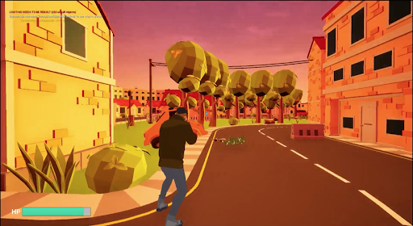
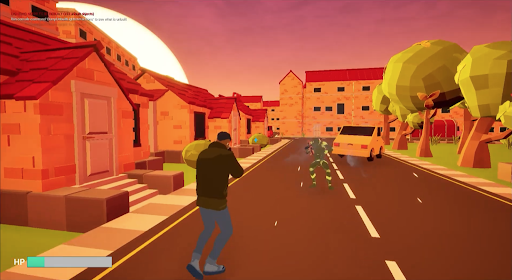
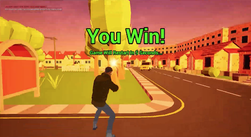

Project 8
Man vs Bot
A fast-paced third-person shooter made in Unreal Engine with C++, where you fight to clear out robot AI enemies in a town.

Detailed Description
This section is reserved for a complete breakdown. You can document enemy AI behavior, combat tuning, weapon feel, and the approach you used for encounter design across the town map.
Add technical insights, iteration notes, and final polish decisions from your development process.
Project Media


